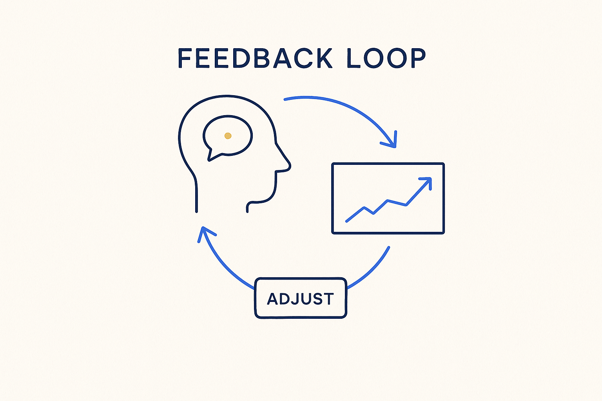

The reinforcing engine of the method: on feedback, we continuously adjust the metadata, skills, rules, instructions, structure and way of working — so every cycle is better-informed than the last.

> The reinforcing engine of the method: on feedback, we continuously adjust the metadata, skills, rules, instructions, structure and way of working — so every cycle is better-informed than the last.
The feedback loop is what makes the whole architecture improve itself. Nothing is right on day one; it *converges* on right. Generate, run, observe — the interview answers, the test results, the gaps that surfaced, the stakeholder’s “that’s not what I meant” — and feed what you learned back into the source. The next cycle starts from a better model, not from patched-over code.
What’s specific here is *what* the feedback changes. It doesn’t just fix a value; on feedback we continuously adjust the metadata, the skills, the rules, the instructions, the structure — and the way of working itself. A rule that proved wrong becomes a corrected rule; a question that landed badly sharpens the instruction set; a recurring gap changes the structure; a friction in the process reshapes the method. Because all of these live as versioned metadata, feedback has a durable place to land instead of evaporating in a meeting.
This is the engine behind the pipeline and the human counterpart of constant feedback: constant feedback is the stance (ask, always), the feedback loop is the mechanism (fold it back into the source, every time). Keep the loops short and always terminating in the metadata, and the company brain gets sharper with every pass.
Where it lives: the method layer of Breakthrough Modeling — the reinforcing engine that adjusts metadata, rules, skills and the method itself.